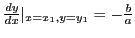

Next: Exercises Up: Simple applications of the Previous: Exercises Contents Index
Let the equation of a curve be
If we eliminate  between equations (6.9)
by squaring and adding the results, we have
between equations (6.9)
by squaring and adding the results, we have
In §6.13 we shall discuss the motion of a point  , which motion is
defined by equations such as
, which motion is
defined by equations such as
Since from (6.8)  is given as a function of
is given as a function of  ,
and
,
and  as a function of
as a function of  , we have
, we have
As in Figure 6.6 draw the major and minor auxiliary circles
of the ellipse. Through two points B and C on the same
radius draw lines parallel to the axes of coordinates.
These lines will intersect in a point  on the ellipse, because
and
,
or,
and
.
Now squaring and adding, we get
on the ellipse, because
and
,
or,
and
.
Now squaring and adding, we get
Solution.
The parameter being  ,
,
.
,
,
.
Substituting in the given equations (6.11), we get as the point of contact. Hence . Substituting in (6.1),
The path described by a point on the circumference of a circle
which rolls without sliding on a fixed straight line is called
the cycloid.
Let the radius of the rolling circle be  , P the generating point,
and M the point of contact with the fixed line OX, which is
called the base. If arc PM equals OM in length, then
P will touch at O if the circle is rolled to the left.
We have, denoting angle POM by
, P the generating point,
and M the point of contact with the fixed line OX, which is
called the base. If arc PM equals OM in length, then
P will touch at O if the circle is rolled to the left.
We have, denoting angle POM by  ,
,
The SAGE commands for creating this plot are as follows:
[fontsize=\small,fontfamily=courier,fontshape=tt,frame=single,label=\sage]
sage: t = var("t")
sage: f1 = lambda t: [t-sin(t),1-cos(t)]
sage: p1 = parametric_plot(f1(t), 0.0, 2*pi, rgbcolor=(1,0,0))
sage: f2 = lambda t: [t+RR(pi)/2-1,t+1]
sage: p2 = parametric_plot(f2(t), -1, 1, rgbcolor=(1,0,0))
sage: f3 = lambda t: [-t+RR(pi)/2,t]
sage: p3 = parametric_plot(f3(t), -1, 1, rgbcolor=(1,0,0))
sage: t1 = text("P", (RR(pi)/2-1+0.1,1-0.1))
sage: t2 = text("T", (-0.4,0.1))
sage: t3 = text("N", (RR(pi)/2,0))
sage: show(p1+p2+p3+t1+t2+t3)
Solution:
Substituting in (6.3), (6.4), (6.5), (6.6) of the last section, we get
length of subtangent =  ,
,
length of subnormal =  ,
,
length of tangent = ,
length of normal = .
david joyner 2008-08-11